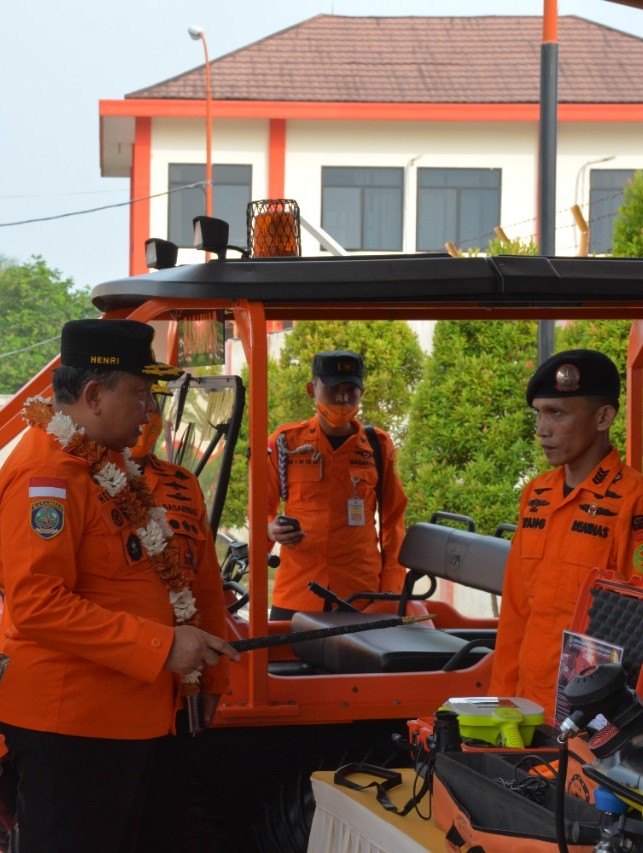
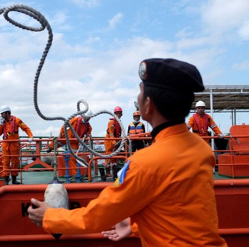
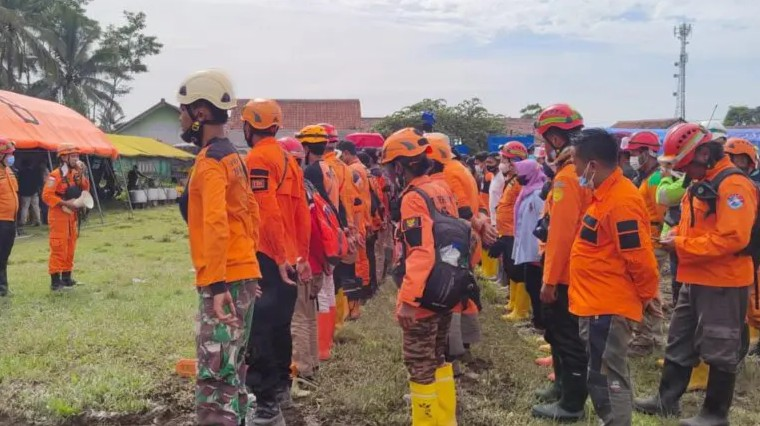
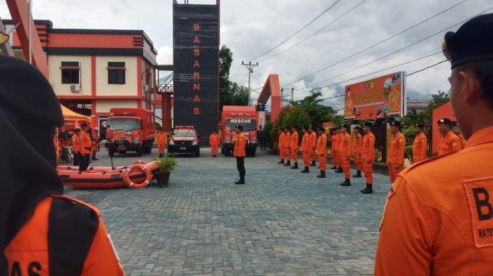

Tanggal closing absensi 30-Nov-2025
| Nama | Instansi | No. Telp | Alamat |
|---|---|---|---|
| No records to display. | |||
Jl. Raya Bandara Juanda
Surabaya 61253-A
INDONESIA
Badan Nasional Pencarian dan Pertolongan
Email : sar.surabaya@basarnas.go.id


Copyright (c) 2024 (Creative Tim)
Delapan penjuru mata angin dengan warna merah putih mengandung arti dan makna bahwa Badan Nasional Pencarian dan Pertolongan dalam mengemban tugas di bidang kemanusiaan senantiasa menitikberatkan pada kecepatan dan ketepatan serta dilaksanakan dengan penuh ketulusan (warna putih) dan keberanian (warna merah).
Awan, gunung dan 5 ombak di laut mengandung arti dan makna bahwa dalam menjalankan tugasnya Badan Nasional Pencarian dan Pertolongan melingkupi segala medan tugas; Awan menggambarkan lingkup medan tugas udara, gunung menggambarkan lingkup medan tugas darat, ombak di laut menggambarkan lingkup medan tugas di air yang dilandasi dengan kelima sila dalam Pancasila.
Pita bertuliskan "INDONESIA" mempunyai arti bahwa Badan Nasional Pencarian dan Pertolongan merupakan lembaga pemerintah Indonesia yang melaksanakan tugas pencarian dan pertolongan. Profile
Periode 2026.01.01 s.d 2026.02.10

Badan Nasional Pencarian dan Pertolongan bertanggung jawab terhadap penyelenggaraan SAR di Region Pencarian dan Pertolongan Indonesia. Region ini meliputi wilayah teritorial Indonesia dan wilayah Flight Information Region (FIR).

Peraturan-peraturan yang berlaku di Badan Nasional Pencarian dan
Pertolongan dapat diunduh melalui website:
www.jdih.basarnas.go.id
© 2026 Creative DM, made with love 414386